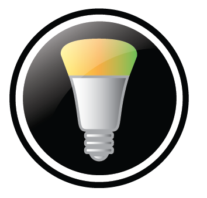

The Philips Hue
100% CERTIFIED BY THE THING SYSTEM
The Philips Hue API
The Philips Hue is the first commercially-available ethernet-controllable bulb. Unofficial implementations of its API have been available since late fall, 2012. Philips released their own SDK in spring, 2013, and periodically updates the SDK to provide new functionality (e.g., geofencing).
Briefly, authorized applications communicate via REST / JSON to a "bridge", which is a small device with ethernet connectivity. This bridge mediates the API calls to the bulbs associated with the bridge. The bridge and bulbs communicate via a Zigbee mesh.
Applications
Philips provides applications for both iOS and Android. It is recommended that these applications be used to pair bulbs to the bridge. The applications provide considerable functionality, viz.,
- Scene definition and execution
- Control of individual bulbs
- Timer parameters for each scene
- Geofencing parameters for each scene
Philips periodically updates the applications (as noted below, the first version had some rough edges).
There are also many third-party applications available (over 40 for iOS, and over 30 for Android, as of this writing) In addition, there is a Philips hue Channel on IFTTT that contains several "recipes" for the Philips Hue.
Pairing
When pairing a bulb with the bridge, the bulb must be in "direct" contact with the bridge (i.e., Zigbee pairing traffic between the bridge and the bulb must not pass through an intermediary bulb). Accordingly, all bulb pairings should occur in a location very close to the bridge -- after pairing, the bulb may be moved to its intended location.
Remote Access
Philips' MeetHue website provides a mechanism for a user to register an account and associate it with a bridge. Applications requiring remote access to the bridge use an undocumented protocol to redirect the user to the MeetHue site to ask for permission. If given, the site subsequently redirects the application to a URL containing an access token -- effectively a proprietary implementation of the core functionality of OAuth. Once a token is granted, the documented API may be encapsulated and sent to the MeetHue site for subsequent transmission to the Hue bridge. Finally, the MeetHue site allows a user to view and disable applications from using the remote service.
The Protocol
Discovery and Authorization
The bridge advertises itself via SSDP, which allows any device on the same multicast segment (typically, though not always, the entire home network) to discover the bridge. Multiple bridges may exist on the same multicast segment, as independent entities (of course, a single bulb may be paired with only one bridge at a time).
When a device discovers a bridge, it must be authorized. Authorization occurs when the user presses the pairing button on the bridge, followed by the device making an API request identifying itself using a unpredictable string. All subsequent API requests must include that identifying string. The security model assumes that third-parties are not able to snoop on data exchanges, which are always plaintext (cf., the Security section below).
If the device and bridge reside on different multicast segments, then there are two solutions:
- First, if different multicast segments are not required in the home network, reconfigure the network to have a single multicast segment, independent of the number of physical segments. This is the "correct" solution, but requires either a "clueful" network installer or a devoted home user.
- Second, when a bridge is able to access the Internet, it registers its local IP address (e.g., '192.168.1.2') and MAC address (e.g., '00:17:88:ab:cd:ef') with a "network UPnP" (nUPnP) service in the Internet. That service records the local IP address along with the associated global IP address. As a side-effect of today's network practice, all devices in a home network tend to have the same global IP address. Thus, the device makes a request to the nUPnP service asking for all bridge addresses having the same global IP address. This allows the device to discover all bridges on the home network (cf., the Security section below).
The preferred behavior for a device is to attempt discovery both via SSDP and nUPnP, correlating results accordingly.
Data Exchange
The API is notable for being both "modern" and "minimalistic" -- using HTTP, REST, and JSON. This combination of technologies is easy to develop with and available to the widest range of platforms.
Implementations
Philips makes available an "official" SDK at its developer site of the Philips Hue API for iOS and OSX, and Java and Android. In addition, on GitHub alone, there are over 50 different implementations of the Philips Hue API in every "modern" programming language, viz., ActionScript, Arduino library, Bash, C++, C#, Clojure, F#, Go, Haskell, Java, JavaScript, Lua, .Net, Node.js, Objective-C, Perl PHP, Python, Ruby, and Smalltalk. Q42 also maintains a so-called "complete list of libraries". This list is rather minimal, but it is linked to by the Philips Hue developer site.
Security
Authorization and Spoofing
The choice of an unpredictable string sent in a plaintext message is controversial. Security professionals point out that third-parties can either intercept or deduce the string. This is particularly true given that the advice provided by discussions of the API indicate that the unpredictable string should be generated by applying an MD5 hash to the device's MAC address. (Thus, if a third-party knows the MAC address of a management device, that third-party is able to forge commands as that device.) It is recommended that devices generate a version 4 UUID for this purpose.
All things being equal, encrypted traffic is preferrable to plaintext traffic -- even in a home network. However, "correctly" encrypting traffic comes at a cost, not in terms of computational overhead but in terms of provisioning confidence. Specifically, current consumer encryption technologies require proper key management discipline. The current state of home networking makes this a rare event.
Accordingly, the approach taken by the Philips Hue API is a reasonable compromise providing that two assumptions are true:
- the bridging/routing infrastructure of the home network is not compromised; and,
- the unpredictable string is _truly_ unpredictable.
Unauthorized Disclosure of Bridge information
The nUPnP service relies on the source IP address of incoming traffic in order to determine what information to disclose. It is possible for source addresses to be spoofed and for the return traffic to be intercepted.
However, unless the third-party also has a presence on the home network, this information is of arguable utility. (Of course, if the third-party does have a presence on the home network, there may be no need to spoof unless the home network administrator has configured packet filtering.)
In more detail
The most comprehensive public discussion of potential security issues with the Philips Hue was released in a August, 2013 blog post by Nitesh Dhanjani. Associated with the post is a paper describing his analysis.
Overall
The Philips Hue is the first-to-market network lighting system for consumers. Although the initial version of the iOS app did lack some polish, the current version is fairly described as both usable and powerful.
The API provided by the bridge is easily described as best-in-market. Current and future implementors would do well to take note of the design trade-offs in the Philips' design. The widespread implementation of the API by numerous third-party developers confirms this advice.
To be the clear best-of-market product, we require good applications, an excellent API, multiple API implementations, and great hardware. We believe that the Philips Hue system meets these criteria quite handily.
**BECKY: AT THIS POINT, I WOULD LIKE TO SEE FIVE SMALL SILOUETTED HUE BULBS ALL GREEN, SHOWING THAT THE PHILIPS HUE HAS A FIVE STAR RATING.**
Notes
A bridge is purchased as a part of a "Hue starter pack" that also contains three bulbs. These bulbs are factory-paried to the bridge. Although this is a convenience; as of this writing, if one of these bulbs becomes non-operational, then the bridge must be factory reset in order to remove the pairing information from the bridge. To avoid this situation: factory reset the bridge prior to installation and then pair the three bulbs manually.
Finally, as far as is known, Philips has not documented the Zigbee exchanges between the bridge and the bulbs; accordingly, only the REST/JSON API should be used to control the bulbs.
**BECKY: THE SECTION SECTION SHOULD BE RIGHT BEFORE THE FIGURES. ALSO, ALASDAIR SHOULD MAKE AN EDITING PASS ON IT.**
| Photographs | |
| 00 | Philips Hue box |
| 01 | Philips Hue bulb |
| 01a | The bulb in a lamp fixture after 30min (in C) |
| 01b | The bulb in a lamp fixture after 30min (in F) |
| 02 | The bulb with diffuser removed |
| 03 | The bulb with diffuser removed (being held) |
| 04 | The bulb with diffuser removed (plastic shield over LED PCB removed) |
| 05 | The bulb with diffuser and plastic shield removed (being held) |
| 06 | The bulb with LED board removed, showing the Aluminium heat spreader below |
| 06a | Close up of the LED board |
| 06b | Macro of the LED board |
| 06c | Macro of the LED board |
| 07 | The bulb with the Aluminium heat spreader removed |
| 08 | The interior of the bulb, with the networking board (left) and power board (right) encased in silicone |
| 09 | The exterior Aluminium shielding torn back to expost the silicone encased boards |
| 10 | Aluminium and silicone removed to show the two boards back-to-back |
| 11 | The power board in-situ |
| 12 | The networking board in-situ |
| 13 | The power board in-situ (alternative view) |
| 14 | The networking board in-situ (alternative view) |
| 15 | The networking board |
| 16 | The networking board (back) |
| 17 | Macro of the CC2530 chip |
| 18 | Extreme macro of the CC2530 chip |
| 19 | Networking board (left) and LED board (right) |
{kind=link}
{kind=link}
{kind=link}
{kind=link}
{kind=link}
{kind=link}
{kind=link}
{kind=link}
{kind=link}
{kind=link}
{kind=link}
{kind=link}
{kind=link}
{kind=link}
{kind=link}
{kind=link}
{kind=link}
{kind=link}
{kind=link}
{kind=link}
{kind=link}
{kind=link}
{kind=link}
{kind=link}
{kind=link}